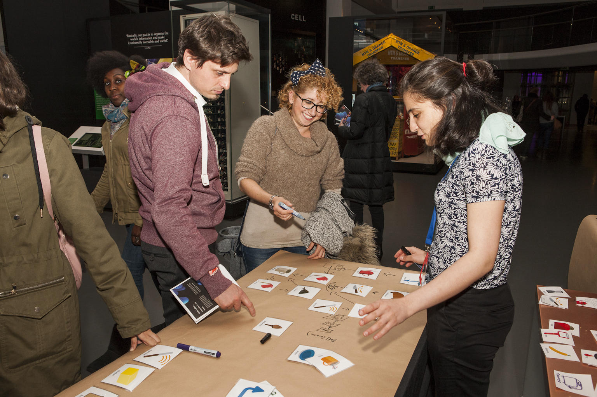
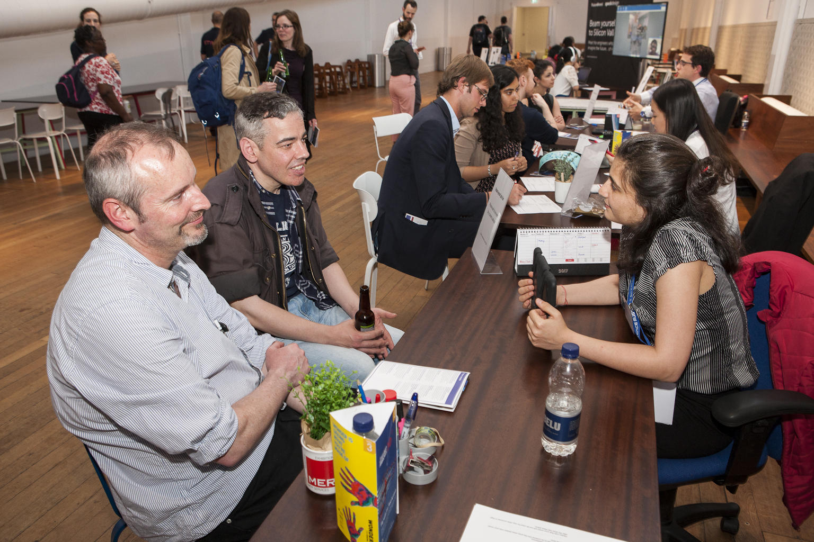

Student volunteer at the Robots Exhibition - Science Museum London
- Feb 2017: Day-long training at the London Science Museum to learn about tricks and tips of science communication.
- In action:
|  |  |
|---|---|
April 2017: Designed and executed a game called 'The breakfast machine'. The aim was to re-introduce programming principles by getting people to create a flowchart of instructions that their ideal breakfast machine would need to execute! |
May 2018: Manned the 'Will robots take your job?' desk where we shared face-time with people in small groups informing them about the chances of automation of their jobs, the skill-sets immune to AI and addressing the general mis-conceptions about machine learning and AI. |